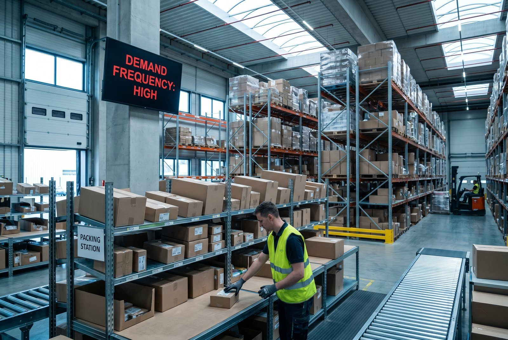

Du har 600 SKU'er på lageret. De er placeret nogenlunde som de ankom: leverance for leverance, ingen systematik. Din bedstsælgende vare er i gang C. Din sælgsomste i årevis er i øjenhoejde gang A. Det er ikke systematisk dårlig planlanning. Det er mangel på slotting.
Kort svar
👉 Vil du se det i praksis? Kontakt SmartPack
Slotting er den systematiske placering af varer på lageret baseret på plukfrekvens, varestorrelse og relationer mellem varer. Det reducerer gangdistance, fejlrate og fysisk belæstning. Et uoptimeret lager bruger 40-60% mere gangdistance end nødvendigt.De tre slotting-principper
1. Frekvens-baseret placering (ABC) Højtroterende varer tættest på pakkebordet. Det er udgangspunktet for al slotting. 2. Ergonomi-zoner Inddel hylden i tre zoner:- Guldzone (knæhøjde til skulderhøjde): A-varer. Mindst bøjning, mindst strecch, højest tempo.
- Sølvzone (gulv + over skulder): B-varer. Lidt mere bevægelse.
- Bronzezone (gulv / meget højt): C-varer og bulk.
3. Varens form og vægt Tunge varer i lav højde (undgå løft over skulder). Store varer på bredere hylder. Små varer i bakker der forhindrer de forsvinder bagpå hylden.
Hvad det koster ikke at gøre det
Et lager med 300 ordrer/dag og en suboptimal placering der tilfjøjer 2 minutters ekstra gangdistance per ordre:- 2 min/ordre × 300 ordrer × 250 arbejdsdage = 150.000 minutter/år
- 150.000 min / 60 = 2.500 timer
- 2.500 timer × 250 kr./time = 625.000 kr./år i spildt gangdistance
Herudover: ergonomi-relateret sygefravær ved forkert placering (tunge løft højt) koster yderligere 15.000-40.000 kr. per sygemelding.
Slotting-projekt: Sådan gør du det på en uge
Dag 1-2: ABC-analyse Exporter ordrevolumen per SKU, identificer A/B/C-grupper. Dag 3: Layout-plan Marker de hylder der fysisk er tættest på pakkebordet (guldzone). Kortlaeg hyldekapacitet. Dag 4-5: Flytning Flyt A-varer til guldzone, B til sølvzone, C ud. Opdater lokationskoder i WMS. Dag 6-7: Verifikation Test med 50 ordrer. Mål ekspeditionstid. Sammenlign med baseline. Typisk resultat: 20-35% reduktion i ekspeditionstid per ordre.Når du skal lave slotting igen
- Efter sortimentsudskiftning på 10%+
- Før Black Friday / peak-sason
- Når du får nye hylder eller ændrer layout
- Når ekspeditionstiden stiger uden klar årsag